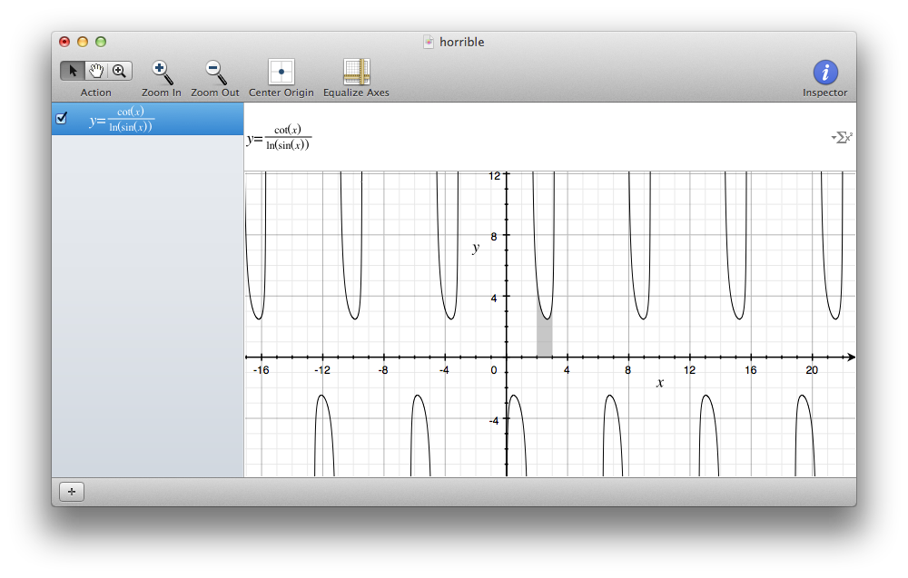

A Case Against Calculus
Tuesday, April 5, 2016 · 7 min read
I just finished my last unit of BC Calculus in high school, which gives me the ethos to talk about what I’m going to talk about.
But first, a dramatic introduction.
In Concepts of Modern Mathematics, Ian Stewart writes about the function cot(x)/ln(sin(x)).
This is, of course, a ridiculously useless function. It’s just that calculus classes are so obsessed with gnarly functions like that, that you get desensitized to things like taking logarithms of trig functions. But let’s pretend this is a reasonable function worth talking about; bear with me.
Since it’s a function, we can of course graph it:

Notice that shaded-in part? That represents the area under the curve from two to three. If I was bored on a Friday night and really wanted to know how big that area was, Mac’s Grapher.app would tell me that it’s around 3.0250 units; it would do this by approximating that area by counting all the gray pixels.
If I wanted an exact value, I could, of course, use calculus. I could take the integral of cot(x)/ln(sin(x)) to get ln(ln(sin(x))). A couple of quick substitutions; nothing fancy. To get the area from two to three I could evaluate ln(ln(sin(3))) - ln(ln(sin(2))). So far, so good.
When I try to evaluate that expression, however, my TI-84 says “Invalid Domain”. In Python, this throws a ValueError. JavaScript says the answer is NaN, as does Haskell.
This should be at least somewhat disturbing, and I’ll let you spend a couple minutes pondering this before you read on.
Perhaps surprisingly, this article is neither a rant about calculus nor about math education. Rather, it’s an argument that we should not regard calculus as the pinnacle of high school math education.
As it stands, high school students take some variation on the sequence of geometry, algebra, trigonometry, precalculus, and calculus. Notice how blatantly it appears to “build up” to calculus, to the point where the penultimate class is literally called “precalculus”.
This is the notion I want to challenge. Math isn’t like a linear highway to travel; it’s like a city to explore. It’s all about making connections between disconnected avenues and forging new paths when nothing else works. Calculus is just another quarter in the city of math; there’s no reason it should be your final destination.
Let’s talk some more about ln(ln(sin(x))). You might have discovered by now that this function’s domain is empty. sin(x) is always between -1 and 1, so its logarithm either doesn’t exist or is negative. In either case, the outer logarithm is undefined.
This is scary because we know that ln(ln(sin(3))) - ln(ln(sin(2))) should have a real value, that is, the area under the curve. What can we do?
One solution is to blindly manipulate until something works. For example, we can use some log properties to get ln(ln(sin(3))/ln(sin(2))). Since the natural log of both sin(2) and sin(3) are negative, the quotient is positive and so we get a real answer—in fact, you get 3.025002112364854.
You could declare victory here, since this answer matches the “experimental” result from Grapher.app. But this should, of course, bother you. We took undefined values and somehow got a defined result. This is the kind of thing that usually shows up on Facebook gifs proving that 0=1.
So, you could instead spend some time thinking about whether ln(-1) could have a sensible value. Not coincidentally, this should remind you of assigning -1 a square root—indeed, the two questions are closely related by a theorem of Euler’s stating that ln(-1) = sqrt(-1)*pi.
Armed with this new tool, it should not be hard for you to show that in the complex numbers, ln(ln(sin(3))) and ln(ln(sin(2))) have the same imaginary part, and therefore their difference is real.
But surely you shouldn’t have to resort to complex numbers for such a real problem? That’s another can of worms altogether… but I digress.
I suppose what I meant to show you from this exercise was that a lot of the high school calculus we learn is broken. It’s the gilded upper layer of results supported on tall, swaying towers of elided proofs, and very often corner cases slip through the cracks and fall into an abyss of contradiction.
Calculus is fundamentally a bit like cheating: it’s about manipulating infinite things which don’t really exist by talking about limits. And as soon as you forget that calculus is an illusion, you are completely lost, because fundamentally, it doesn’t make sense to talk about infinity.
Let’s play with another example.
What’s the value of the infinite sum 1 - 1 + 1 - 1 + 1 - 1 + …? Well, let’s let this value be N. Now, clearly N-1 = -N, so N = 1/2. Right? In fact, looking more closely, this is just a geometric sequence where the ratio is -1, so we could just use the formula 1/(1-r) to arrive at the answer 1/2.
Oh, but wait. Isn’t this series also (1 - 1) + (1 - 1) + (1 - 1) + …, which is 0?
This series is called Grandi’s series, and by now you might be doubting that there’s any meaningful sum at all. And you’re right; there isn’t. If you recall from calculus, the sum only exists when the series converges, which means it needs to have a limit. Clearly, this series oscillates forever between 0 and 1 and doesn’t converge. If this was on a test, you’d say something about deltas and epsilons; or you could cite the ratio test by pointing out that the ratio of negative one is outside the interval where a geometric series would converge.
Perhaps this is unsurprising. It was, after all, a rather fishy-looking series to begin with.
But then what was wrong with our geometric series derivation above? Why doesn’t it work? Can you really pin down where that logic breaks down? These are fun questions to think about. It turns out that even the great Leibniz didn’t really know what to do about this series for a while—and that’s precisely where the genius of calculus lies. The most important part of calculus, I think, is the idea of the formalizing slippery concepts like “limit” and “continuous” in terms of discrete symbolic logic.
Real numbers are such a slimy, oozing mess. What is a real number? Integers make sense; they’re counting numbers. Even fractions make sense when you think of them as ratios. But how do you even define real numbers? How do we know that real numbers are all the numbers? The square root of two isn’t a fraction; so you can’t define real numbers as fractions. Maybe you can add in all roots of integer polynomials… is that enough? No! Pi isn’t the root to any integer polynomial. So we must resort to infinite decimal numbers, which is what you might have been taught as the “definition” of real numbers.
But maybe there are “real” numbers that aren’t real numbers; numbers that can’t be represented by infinite decimals, just like how the square root of two is not a fraction. Do we really know for sure that we know all the real numbers?
At this point, we aren’t even asking the right question. We should be asking, “what are the properties we want out of real numbers?” The answer to that lies within the subject of real analysis.
These are fascinating subjects that form the basis for calculus; but at the same time, they’re often neglected in favor of more “practical” areas of calculus such as compound interest. Of course, most of the calculus we do isn’t any more “relevant” than the word problems from third grade: do you ever meet a frictionless particle moving along the path defined by y = sin(atan(x)) in real life? We’ve just exchanged one set of plug-and-chug exercises for a more involved version of the same thing.
It doesn’t help that we have an AP test to prepare students for; all that does is solidify the idea that there are “kinds of problems” that you need to know how to solve.
Perhaps if you’re going to be a physicist or an engineer or an economist, you’ll need to do a lot of integration by parts. I doubt it; we have WolframAlpha to do the more tedious work for us. I want to suggest that taking integrals is analogous to long division in calculus: just a tool, certainly not the climax of the study of calculus. But unfortunately, that’s often how it’s presented.
Have you noticed how calculus is like an open secret? It’s the elephant in the room from middle school onwards. Teachers speak of it in hushed voices whenever a student’s question brings the lesson dangerously close to the realm of calculus.
In algebra, students are forced to evaluate messy-looking difference quotients just so that they have “seen it before” once they get to calculus. Chemistry teachers hint at integrals when discussing rate laws, but try as hard as possible to avoid saying “integral”. Even in physics, students get tantalizing allusions to “instantaneous rates of change”, with promises that they will be treated formally in calculus.
As a result, by the time most students are in calculus class, they already know what derivatives and integrals are. Calculus is an open secret. In a way, calculus class merely serves to teach us how to evaluate derivatives and integrals—it’s just like explaining long division to kids who understand fractions.
And I want to challenge the idea that this is something to be saved for a student’s last year of school. I believe that you can teach the quotient rule and integration by parts to a middle school student if you felt like it. Contrary to what most high school students believe, I don’t think knowing how to integrate makes you “smart” or even particularly talented at math.
The real value of a calculus class, I think, is the formalization of calculus. The deltas and epsilons, the formal definitions of “limit” and “continuous” and “derivative” are a way to put simple intuition on rigorous ground. That’s the part that requires mathematical maturity. And yet that’s the part we gloss over in order to spend time on memorizing formulas for volumes by rotation, because that will be on the AP test.
I think a telling sign of where our priorities lie is the proof of the chain rule that most students are shown: in particular, the fact that it is actually incorrect. If you can recall how your teacher proved the chain rule (if he or she even did), then try to reconstruct the proof in the case where the inner function is constant—does it still work?
I believe that a correct proof of the chain rule is far more valuable to a mathematics student than the ability to differentiate gnarly functions—and I don’t think I’m being a naïve idealist here. In a world where powerful computational algebra systems are free and blindingly fast, what matters is not to be able to churn out integrals, but understanding the theory behind why they work.
As a corollary, I believe that a comprehensive mathematics education shouldn’t focus at all on such “end goals”, but instead serve to instill the “spirit” of math: the eternal balance of intuition and rigor. In this framework, calculus is just another fantastic droplet in an ocean of beautiful mathematics, and it’s a shame if students were confined to this one path and deprived of the big picture.
In the 1960s, mathematicians were recruited to redesign the grade-school mathematics curriculum. They came up with something called “New Math”, which tried to teach elementary school children set theory and group theory and formal logic and all that good stuff.
In many ways, New Math was far ahead of its time. The concepts are incredibly relevant today with the popularity of computer science. So why didn’t it take over the world?
Parents. Parents, justifiably, wanted their kids to be able to add and multiply and do long division. Famously, Professor George F. Simmons declared that New Math created students who had “heard of the commutative law, but did not know the multiplication table.”
And this is why I think calculus is going to stick. It’s becoming less and less useful for high-paying industry jobs, but the world has an impression that calculus is the final destination of high-school math education, a finish line to cross, a story to complete. Calculus is both blessed and cursed with this perception, and with that in mind, I’m sure it’s here to stay for decades to come.